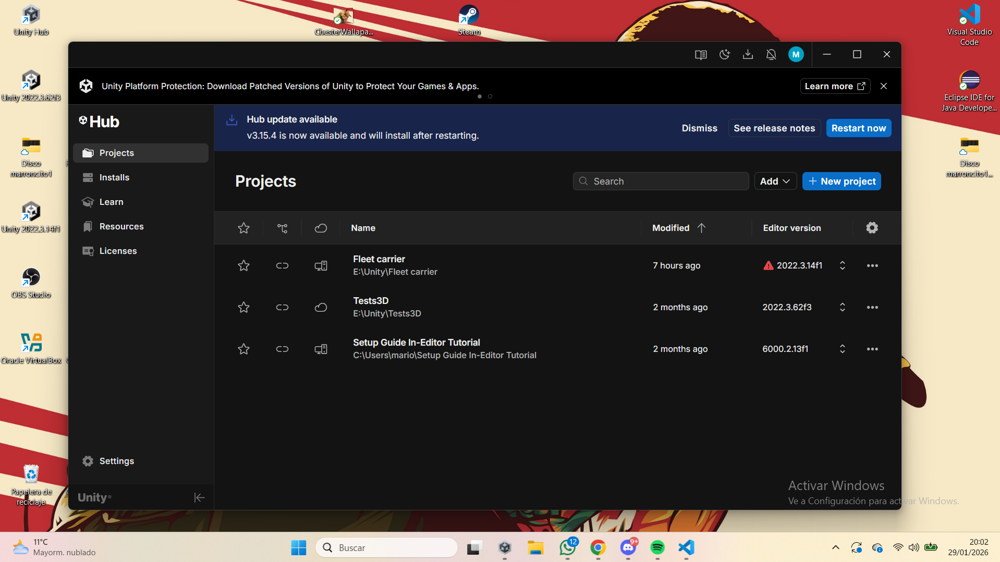
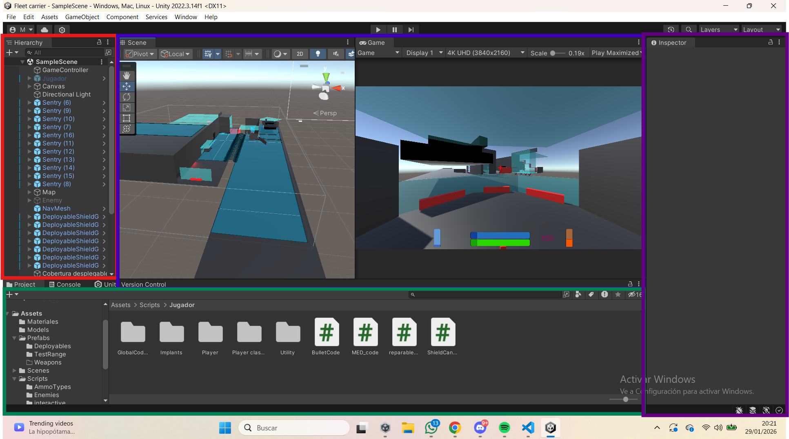

Unity es una aplicacion para Windows/macOS/Linux que sirve para crear aplicaciones, aunque puede crearse de todo, está pensado principalmente para juegos dada la forma en la que están distribuidas las funciones dentro de la aplicación.
Para comenzar con la instalación habrá que dirigirse a la pagina oficial de Unity e instalar el "Unity Hub", una vez dentro decidimos que version del editor deseamos instalar y elegimos en que plataformas vamos a enfocar nuestro desarrollo. Una vez hecho esto comenzará una instalación tras la cual la aplicacion será totalmente funcional.
Para comenzar a utilizar Unity lo primero de todo será crear un proyecto nuevo, donde le daremos nombre y elijiremos el tipo de proyecto que deseamos ( ya que puede ser o bien 2D o 3D ). Una vez elegido esto ya podemos comenzar
En la segunda imagen a la derecha se puede ver como es el programa una vez abierto, se puede observar que hay 4 cuadrados grandes de colores: El rojo es la jerarquia , Ahi es donde se ven todos los objetos en la escena ; El azul es la escena y la vista de camara: La escena es donde se ven todos los objetos colocados en el espacio y la vista de camara es lo que veria el jugador; El verde es la lista de Assets: Los archivos que usa el juego para funcionar; Y por ultimo el morado: Es el inspector, es donde se pueden ver las cualidades y atributos de un objeto seleccionado

